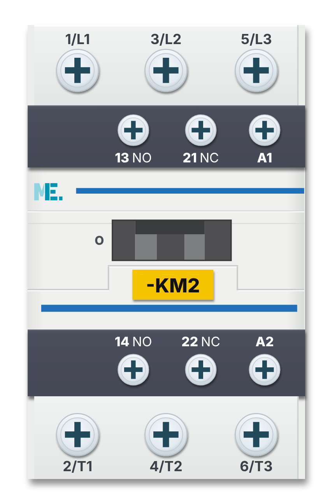

El 21-22 (NC) de -KM1 va en serie con la bobina de -KM2, y el de -KM2 con la de -KM1: si uno está cerrado, el otro no puede cerrar. Además, un bloque mecánico entre los dos.

21-22 de -KM1
21-22 de -KM2
Fuente: esquemas de inversión de fabricantes (enclavamiento eléctrico y mecánico) · IEC 60947-4-1